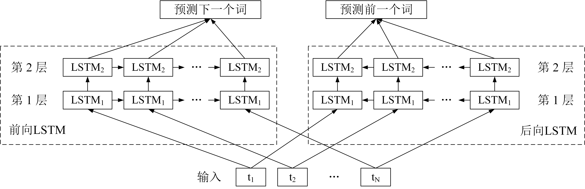
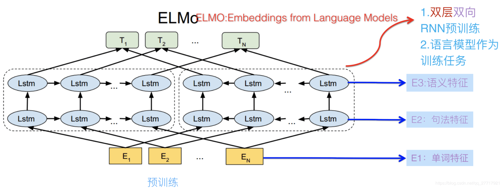
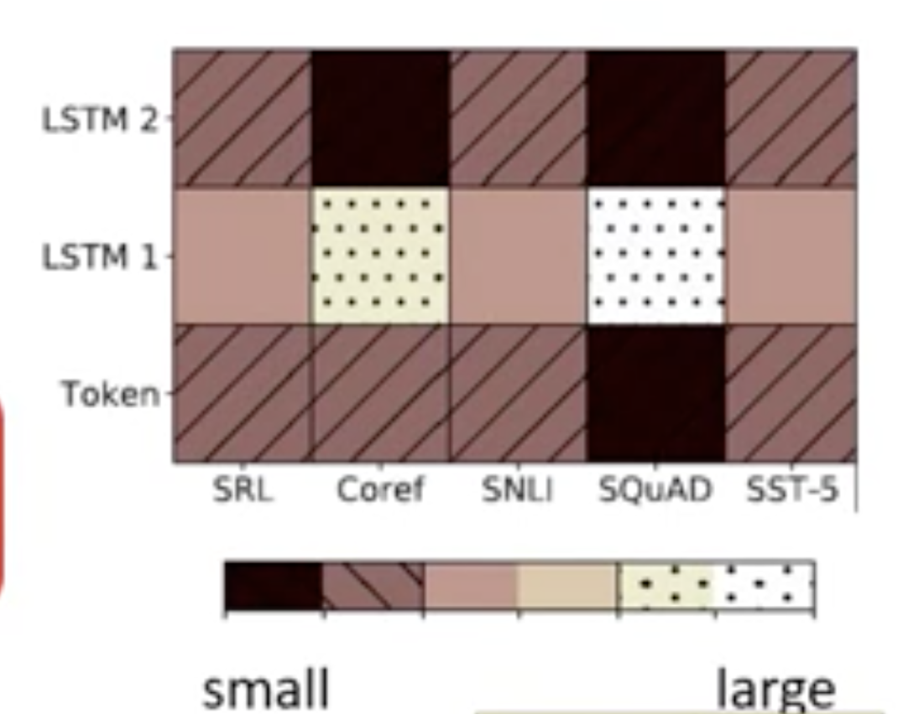
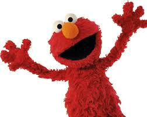

ELMo的全称是Embedding from Language Models, 非常直接地说明了主旨, 即从语言模型中得到的词的Embedding.
关于语言模型, 在我的这篇博客中有介绍.
ELMo的关键之处在于, 它是相对较早提出的一种上下文相关(动态)词向量表示算法.
ELMo之前
在我们人类的语言当中, 无论中文还是英文, 都几乎不可避免地有一词多意的现象, 其实想想这是比较符合逻辑的, 如果一旦有一件不同的事物就去取一个不同的词来进行标记或者表示, 那词可能就太多了. 我们在用语言进行交流时, 接收到的不是一个个独立的词, 而是由一个个词有顺序组成的一段话, 对于一词多意的问题, 可以根据其不同的语境, 不同的上下文来进行判断.
之前的一些词向量表示方法, 如独热编码进行表示; 或者使用词的共现关系来得到词向量, 如隐语义模型, 本身并不能较好地表示词的含义与关系.
到了word2vec, 在词的表示上有了质的提升. 不过是一种静态的, 上下文无关的表示方法, 即一个词无论放到哪里, 都对应唯一一个向量. 在一些比较困难的任务中, 会影响最终的结果表现.
结合上面所述, 那么有没有某种算法, 可以让用一个词, 在不同的上下文中, 有不同的向量表示呢? 想想比如在使用LSTM的时候, 每次的输入是预训练好的词向量(如word2vec), 同一个词经过中间的运算, 在不同的语境下会得到变化的输出$h$, 而这个$h$是否可以看成是当前输入单词结合了上文的表示呢? 当然是可以的, 所以看起来思路是比较简单的, 下面就来具体介绍ELMo算法的原理.
ELMo原理
ELMo是一个RNN Based Model, 其模型结构如下图:

首先, 其输入是由其它算法(可以是word2vec)预训练好的词向量, 原论文中使用的是CNN-BIG-LSTM得到的预训练词向量.
接着ELMo的核心结构, 是双向LSTM, 而LSTM的层数可以设置多层, 如图中设置的两层.
然后是学习任务, 如其名称Embedding from Language Models, 是通过构建语言模型来学习词向量的参数. 对于前向LSTM, 作为一个语言模型, 根据当前输入, 预测下一个词; 对于后向LSTM, 则反过来, 根据当前输入, 预测前一个词.
用数学公式来对模型进行表示如下:
对应的损失函数为:
其中包含两项, 第一项为前向LSTM的损失, 后面一项为后向LSTM的损失, $\theta_x$表示输入向量, $\overrightarrow\theta_{LSTM}$表示前向LSTM参数, $\overleftarrow\theta_{LSTM}$表示后向LSTM参数, $\theta_{softmax}$表示输出层的softmax参数.
好的, 假设现在已经用大量语料将ELMo模型训练好了, 那么…词向量呢, 这是一个语言模型啊. 其实就和word2vec训练的时候类似, word2vec利用预测是否为上下文词的任务, 来学习词向量, 而ELMo利用语言模型的任务, 来获取词向量.
上面有提到过, 可以用LSTM的输出向量$h$来作为词向量, $h$中包含了上下文信息, 是动态的. 不过现在的问题是, 假设Bi-LSTM有$L$层, 对于每个输入的词来说, 每层有两个$h$(前向与后向)向量, 如果再算上输入向量$\theta_x$, 那么总共就有$(1+2\times L)$个向量, 最终的词向量应该取哪个向量, 或者哪些向量呢?

一般来说, 多层的LSTM, 每层的输出向量$h$的表示侧重可能有所不同, 如在两层的Bi-LSTM中, 第一层可能更多表示语法特征, 第二层可能更多表示语义特征.
而在最终使用这些向量来做下游任务(如文本分类, 序列标注)的时候, 最简单的做法, 就是去最后一层的前向与后向LSTM的输出的拼接向量, 即将softmax层去掉以后, 接到下游模型上. 而复杂一些的做法, 就是通过具体的任务, 学习这些向量的权重, 公式如下:
其中$\gamma^{task}$为超参数, 表示对加权和向量的缩放, $s_j^{task}$表示第$j$层(拼接)向量$h_{i,j}$的权重系数, 是学习到的, 而输入向量可以用$h_{i,0}$表示.
作者在不同的任务下进行尝试, 发现不同的任务下输入向量, 第一层的输出向量和第二层的输出向量权重是不一样的:

以上, 就是ELMo模型的原理, 其实如果理解语言模型以及LSTM的话, 理解ELMo就非常简单了.
但是ELMo却没有火起来, 原因下面说.
ELMo模型之后
其实原作者之所以给模型取这个名字, 是因为ELMo是<芝麻街>中的一个角色, 大概长这样:

ELMo是RNN Based Model, 在Bi-LSTM上获得动态的上下文相关的词向量表示, 但是一些RNN类模型所具有的缺点, ELMo也有, 比如难以有效捕获长距离相关信息. 比如某个代词, 指代的物品在句子中离它比较远, 那么无论是正向的网络还是反向的网络, 都可能难以发掘其相关性.
此外还有一个计算效率上的缺点, 即难以并行化, 因为RNN本身是串行的模型, 在文本长度较长时, 无论是训练还是预测都会比较慢.
而在ELMo模型之后, 由Transformer衍生出了BERT, GPT. 其中的BERT也是<芝麻街>中的角色(这些人是多喜欢<芝麻街>啊喂), 通过自注意力机制来进行词向量的动态表示, 克服了ELMo的缺点, 把自然语言处理各项任务刷榜了一遍, 后面的博客中会对BERT进行介绍.